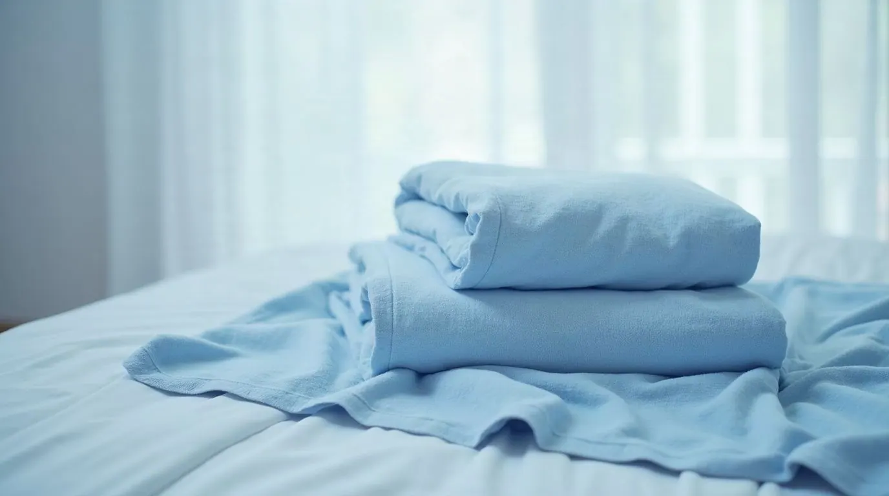
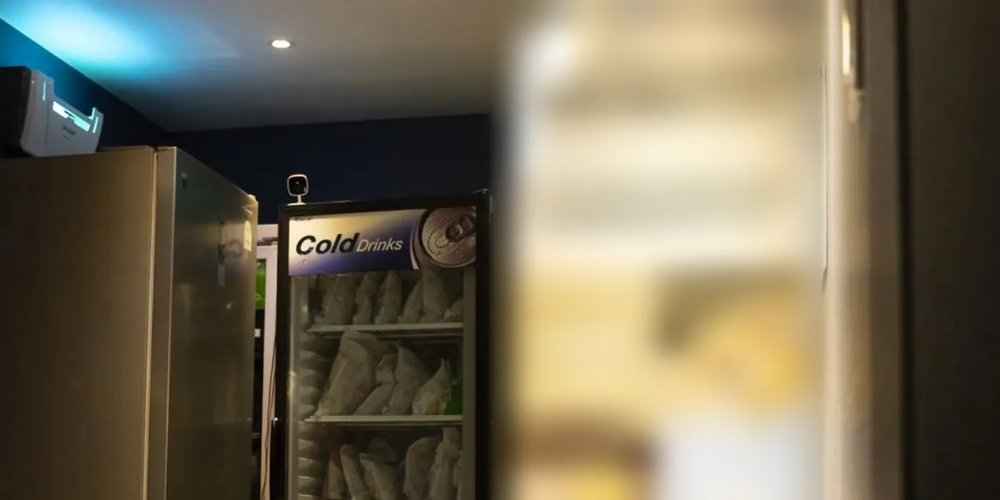

정강이나 팔, 손등에 동전만 한 둥근 습진이 생겨 가렵고 진물이 나다 딱지가 앉기를 반복한다면 화폐상 습진일 수 있어, 건조와 긁기, 샤워 습관, 감염 여부와 몸의 진액 상태를 함께 살핍니다.
여쭙는 것
- 처음 생긴 것은 언제이고, 매년 같은 계절에 반복되나요?
- 어느 부위에 몇 개 정도 있나요? 크기는 동전만 한가요, 손바닥만 한가요?
- 진물이 나나요, 딱지가 앉나요, 아니면 마른 각질만 있나요?
생활에서 해 볼 것
- 샤워는 하루 한 번, 38도 안팎의 미지근한 물로 10분 안쪽에 마치세요. 습진 부…
- 때수건과 거친 샤워볼은 쉬어 주세요. 겨울 동안 때를 밀지 않는 것만으로도 건조가…
- 샤워 뒤에는 수건으로 톡톡 눌러 물기를 거두고, 3분 안에 보습제를 바르세요. 습진…
한의원에서 함께 살필 것
- 피부과 치료를 받고 있지만 해마다 같은 계절에 반복되어 몸 상태를 함께 살피고 싶은…
- 밤에 가려워 잠을 자주 깨고 낮에 피로가 쌓이는 경우
- 피부가 전체적으로 메마르고 입이 마르며 변비 경향이 있는 경우
먼저 확인이 필요한 신호
- 진물이 누렇게 고름처럼 변하고 주변이 붓고 뜨거워지는 경우
- 습진과 함께 열이 나거나 몸살 기운이 있는 경우
- 둥근 자리의 가장자리만 붉고 가운데가 맑아지며 바깥으로 번지는 경우
겨울이 되면 정강이나 팔, 손등에 동전만 한 둥근 자리가 붉게 올라와 몹시 가렵고, 긁으면 진물이 나다 노란 딱지가 앉고, 나을 만하면 다시 도지는 일이 반복된다면 화폐상 습진, 혹은 동전 모양 습진일 가능성이 있습니다. 경계가 비교적 뚜렷한 둥근 모양이 특징이고, 건조한 피부에 잘 생기며 겨울에 심해지는 경향이 있습니다. 대개는 건조를 줄이고 긁기를 끊으며 피부를 보호하면 서서히 가라앉지만, 시간이 꽤 걸리고 같은 자리에 다시 생기기 쉬워 꾸준함이 필요합니다. 다만 둥근 자리 가장자리만 붉고 가운데가 맑아지며 바깥으로 번지거나, 진물이 누렇고 고름처럼 변하며 열이 나거나, 범위가 빠르게 넓어진다면 곰팡이 감염이나 세균 감염과 구분해야 하므로 피부과 진료를 먼저 받으셔야 합니다.
왜 동전 모양으로 생길까요
- 피부가 건조해지면 피부 겉의 보호막에 틈이 생기고, 그 틈으로 자극이 들어와 작은 염증이 시작됩니다. 이 염증이 한 점에서 둥글게 퍼지며 동전 모양을 이루는 경우가 많습니다.
- 가려워서 긁으면 피부가 더 상하고, 상한 자리가 다시 가려워지는 고리가 생겨 같은 자리가 오래 낫지 않습니다.
- 뜨거운 물 샤워, 때 밀기, 비누를 많이 쓰는 습관은 피부의 기름막을 벗겨 겨울철 건조를 더 깊게 만듭니다.
- 벌레 물림, 작은 상처, 화상 자국처럼 피부가 한 번 상한 자리에서 시작되었다는 분도 있습니다.
- 정강이와 손등은 피지가 적고 바깥 공기에 노출되기 쉬워 특히 잘 생기는 자리입니다.
- 한의학에서는 이런 피부를 몸의 진액과 혈이 부족해 피부를 충분히 적시지 못하는 바탕에, 긁기와 열이 겹쳐 염증이 머문 모습으로 보고, 피부만이 아니라 몸 전체의 메마름과 열, 소화와 잠을 함께 살핍니다.

먼저 이렇게 여쭙니다
- 처음 생긴 것은 언제이고, 매년 같은 계절에 반복되나요?
- 어느 부위에 몇 개 정도 있나요? 크기는 동전만 한가요, 손바닥만 한가요?
- 진물이 나나요, 딱지가 앉나요, 아니면 마른 각질만 있나요?
- 가운데와 가장자리의 모양이 다른가요? 가장자리만 붉고 바깥으로 번지는 모양인가요?
- 가려움은 하루 중 언제 가장 심한가요? 밤에 긁다가 깨나요?
- 샤워는 하루 몇 번, 몇 도 정도의 물로, 얼마나 오래 하시나요? 때를 미시나요?
- 바르는 연고나 보습제는 무엇을 언제부터 쓰고 계신가요? 스테로이드 연고를 쓰다가 끊었나요?
- 피부 외에 손발이 차거나, 입이 마르거나, 소화와 잠에 불편함이 있나요?
- 무좀이나 손발톱 변화가 함께 있나요?
- 지난번 상담 이후 범위나 진물이 어떻게 달라졌는지부터 이어서 여쭙니다.
일상에서 먼저 해 볼 수 있는 것
아래는 저녁에 샤워하는 분의 하루 흐름을 기준으로 적었습니다.
- 샤워는 하루 한 번, 38도 안팎의 미지근한 물로 10분 안쪽에 마치세요. 습진 부위는 비누를 쓰지 않고 물로만 헹구거나 약산성 세정제를 손바닥으로 가볍게 쓰는 정도로 충분합니다.
- 때수건과 거친 샤워볼은 쉬어 주세요. 겨울 동안 때를 밀지 않는 것만으로도 건조가 덜하다는 분이 많습니다.
- 샤워 뒤에는 수건으로 톡톡 눌러 물기를 거두고, 3분 안에 보습제를 바르세요. 습진 자리는 크림이나 연고 형태처럼 기름기가 있는 보습제를 넉넉히 덮듯이 바르는 편이 낫습니다.
- 아침에 옷을 입기 전과 오후에 한 번 더, 하루 세 번 정도 보습제를 덧발라 주세요. 정강이처럼 마르기 쉬운 자리는 바른 뒤 면 내의나 얇은 레깅스로 덮어 두면 오래 촉촉하게 유지됩니다.
- 진물이 나는 시기에는 깨끗한 거즈로 덮어 긁지 않게 보호하고, 진물이 마르면 딱지를 억지로 떼지 마세요. 처방받은 연고가 있다면 정해진 횟수대로 바르고, 임의로 늘리거나 끊지 않습니다.
- 밤에 긁는 분은 손톱을 짧게 다듬고, 잠잘 때 얇은 면장갑을 끼거나 습진 부위를 면 붕대로 감아 두세요.
- 침실 습도는 40~60%를 유지하고, 전기장판은 낮은 온도로 두되 피부가 직접 닿지 않게 얇은 이불을 한 겹 깔아 주세요.
- 울이나 거친 합성섬유 옷이 피부에 직접 닿지 않게 면 내의를 먼저 입으세요.
- 물은 하루 동안 조금씩 나누어 충분히 드시고, 술과 맵고 자극적인 음식은 가려움이 심한 시기에 줄여 보세요.
- 2주마다 같은 조명에서 습진 부위 사진을 찍어 두면 범위와 색의 변화를 비교하기 쉽습니다.

예를 들면 이런 경우입니다
아래는 실제 환자 이야기가 아니라 이해를 돕기 위해 만든 예시입니다.
- 예를 들어 매년 11월쯤부터 정강이에 동전만 한 붉은 자리가 두세 개 생기고, 밤마다 긁어 진물이 나다 봄이면 가라앉는 분이라면, 뜨거운 샤워와 때 밀기, 보습 부족이 겹친 경우가 많아 샤워 습관과 하루 세 번 보습, 밤 긁기 막기부터 시작합니다.
- 예를 들어 손등에 둥근 습진이 생겼는데 설거지와 손 씻기가 잦은 분이라면, 물과 세제에 닿는 횟수를 줄이기 위해 고무장갑 안에 면장갑을 끼고, 손을 씻은 뒤마다 보습제를 바르는 습관을 함께 만듭니다.
- 예를 들어 둥근 자리의 가장자리만 붉고 가운데는 오히려 맑아지면서 점점 바깥으로 커지고, 발가락 사이에 무좀이 있는 분이라면 곰팡이 감염과 구분해야 하므로 피부과에서 검사를 먼저 받아 보시도록 안내합니다.
- 예를 들어 습진이 오래 이어지면서 잠을 자주 깨고, 입이 마르며 손발은 차고 피로가 쌓인 분이라면 피부 관리와 함께 잠, 소화, 몸의 메마름과 열의 흐름을 진맥으로 함께 살펴봅니다.
스스로 점검해 보는 목록
- 동전만 한 둥근 자리가 경계가 비교적 뚜렷하게 생겼다.
- 정강이, 팔, 손등처럼 건조한 부위에 주로 생긴다.
- 겨울에 심해지고 따뜻한 계절에는 덜하다.
- 몹시 가렵고, 긁으면 진물이 나거나 딱지가 앉는다.
- 뜨거운 샤워나 때 밀기를 자주 한다.
- 보습제를 하루 한 번 이하로 바른다.
- 가장자리만 붉고 바깥으로 번지는 모양은 아니다.
- 고름, 열, 심한 통증은 없다.
앞쪽 여섯 가지 가운데 여러 개가 해당하고 마지막 두 가지에 문제가 없다면 생활 관리부터 시작해 볼 수 있습니다. 마지막 두 가지 가운데 하나라도 해당하지 않는다면 진료를 먼저 받아 주세요.

한의원에서 함께 살필 수 있는 경우
- 피부과 치료를 받고 있지만 해마다 같은 계절에 반복되어 몸 상태를 함께 살피고 싶은 경우
- 밤에 가려워 잠을 자주 깨고 낮에 피로가 쌓이는 경우
- 피부가 전체적으로 메마르고 입이 마르며 변비 경향이 있는 경우
- 손발이 차고 소화가 더디며 쉽게 지치는 흐름이 함께 있는 경우
- 긴장과 스트레스가 높은 시기마다 가려움이 함께 심해지는 경우
좋은꿈참사랑한의원에서는 첫 방문 때 습진이 처음 생긴 시기와 반복되는 계절, 부위와 개수, 진물과 딱지의 흐름, 지금까지 써 온 연고와 보습제를 먼저 여쭙니다. 이어 샤워 습관, 잠과 가려움으로 깨는 횟수, 식사와 대변, 일과 마음의 긴장을 차례로 확인합니다. 모든 분께 진맥을 하며 맥이 가늘고 메말라 있는지, 빠르고 열이 있는지 살피고 몸 전체의 리듬이 어느 쪽으로 기울어 있는지를 봅니다. 필요하면 혀와 배, 피부 상태도 함께 봅니다. 이야기와 진찰을 바탕으로 침이나 한약 상담 여부를 정하고, 피부과에서 처방받은 연고가 있다면 그 사용은 처방대로 이어 가시도록 안내합니다. 귀가 전에는 이번 주에 바꿔 볼 생활 습관 한두 가지와 다음 방문 때 확인할 점을 정리해 드리고, 다음 방문에서는 지난번 정한 내용이 어떻게 되었는지부터 이어서 여쭙니다. 이종호 대표원장을 비롯해 조영기 원장, 정원영 원장이 같은 방식으로 진료하며, 감염 확인이 먼저 필요해 보이면 피부과 진료를 먼저 안내합니다.
얼마나 지켜보고, 언제 상담하면 좋을까요
- 샤워 습관과 하루 세 번 보습, 긁기 막기를 시작한 뒤 2~3주 정도 지켜보면 진물과 가려움이 어떻게 달라지는지 대략 보입니다.
- 화폐상 습진은 가라앉는 데 몇 주에서 몇 달까지 걸리는 경우가 많아, 하루하루보다 2주 단위로 사진을 비교해 보는 편이 낫습니다.
- 4주가 지나도 진물이 계속 나거나 개수가 늘어난다면 진료를 받아 보세요.
- 가려움 때문에 일주일에 여러 번 잠을 깬다면 기간과 상관없이 상담을 권합니다.
- 진물이 누렇게 변하고 주변이 붓고 뜨거우며 열이 난다면 기다리지 말고 바로 진료를 받으세요.

이렇게 기록해 오시면 상담이 쉬워집니다
- 습진이 처음 생긴 시기와 해마다 반복되는 달
- 부위별 개수와 대략의 크기(동전, 손바닥 등)
- 2주 간격으로 같은 조명에서 찍은 사진
- 샤워 횟수, 물 온도, 시간, 때를 미는지
- 지금까지 쓴 연고, 보습제 이름과 쓴 기간
- 밤에 가려워 깬 횟수
- 복용 중인 약과 영양제 이름
- 무좀이나 손발톱 변화가 있는지
이런 증상은 먼저 확인이 필요합니다
- 진물이 누렇게 고름처럼 변하고 주변이 붓고 뜨거워지는 경우
- 습진과 함께 열이 나거나 몸살 기운이 있는 경우
- 둥근 자리의 가장자리만 붉고 가운데가 맑아지며 바깥으로 번지는 경우
- 범위가 며칠 사이에 빠르게 넓어지거나 온몸으로 퍼지는 경우
- 물집이 무리 지어 생기고 화끈거리는 통증이 심한 경우
- 오래된 한 자리가 낫지 않고 피가 나거나 모양이 변하는 경우
복용 중인 약과 처방받은 연고는 처방한 의사와 상의 없이 줄이거나 끊지 않습니다. 피부 증상과 함께 숨이 차거나, 입술이나 얼굴이 붓고, 어지럽다면 기다리지 말고 119에 바로 연락하세요.

함께 읽으면 좋은 글
- 겨울에 몸이 가렵고 피부가 갈라질 때는 어떻게 관리하나요?
- 겨울이면 정강이가 하얗게 일어나고 밤에 가려울 때는 어떻게 살피나요?
- 몸이 가렵고 피부가 건조한 아토피 피부염은 생활에서 무엇을 살피나요?
한눈에 보는 표
| 구분 | 핵심 |
|---|---|
| 여쭙는 것 | 처음 생긴 것은 언제이고, 매년 같은 계절에 반복되나요? 어느 부위에 몇 개 정도 있나요? 크기는 동전만 한가요, 손바닥만 한가요? |
| 생활에서 해 볼 것 | 샤워는 하루 한 번, 38도 안팎의 미지근한 물로 10분 안쪽에 마치세요. 습진 부위는 비누를 쓰지 않고 물로만 헹구거나 약산성 세정제를 손바닥으로 가볍게 쓰는 정도로 충분합니다. 때수건과 거친 샤워볼은 쉬어 주세요. 겨울 동안 때를 밀지 않는 것만으로도 건조가 덜하다는 분이 많습니다. |
| 한의원에서 함께 살필 것 | 피부과 치료를 받고 있지만 해마다 같은 계절에 반복되어 몸 상태를 함께 살피고 싶은 경우 밤에 가려워 잠을 자주 깨고 낮에 피로가 쌓이는 경우 |
| 먼저 확인이 필요한 신호 | 진물이 누렇게 고름처럼 변하고 주변이 붓고 뜨거워지는 경우 습진과 함께 열이 나거나 몸살 기운이 있는 경우 |
자주 묻는 질문
동전 모양 습진은 다른 사람에게 옮나요?
습진 자체는 옮는 병이 아닙니다. 다만 곰팡이 감염이나 세균 감염과 모양이 비슷할 수 있어, 가장자리만 번지거나 고름이 생긴다면 진료로 구분해 보시는 것이 좋습니다.
보습제만 발라도 되나요?
보습은 기본이지만 진물과 염증이 심한 시기에는 피부과 처방 연고가 필요할 수 있습니다. 처방받은 연고는 정해진 대로 쓰고, 보습은 그와 함께 꾸준히 이어 가세요.
왜 같은 자리에 자꾸 다시 생기나요?
한 번 염증이 있던 자리는 보호막이 약해 건조와 긁기에 다시 흔들리기 쉽습니다. 겉이 가라앉은 뒤에도 몇 주 동안 보습과 긁기 막기를 이어 가시길 권합니다.
목욕탕이나 사우나는 가도 되나요?
진물이 나는 시기에는 쉬는 편이 낫고, 가라앉은 뒤에도 짧게 다녀오고 때를 밀지 않으며 나오자마자 보습해 주세요.
한의원 진료는 언제 받을 수 있나요?
평일은 오전 9시 30분부터 오후 8시까지(점심 13:00~14:00), 토·일·공휴일은 오전 9시 30분부터 오후 3시까지 점심시간 없이 진료합니다. 자세한 내용은 02-815-7510으로 문의해 주세요.
이 글은 일반적인 건강 정보이며 개인의 진단이나 치료를 대신하지 않습니다. 증상이 있거나 복용 중인 약이 있다면 진료를 통해 확인하세요. 치료 효과는 개인마다 다를 수 있습니다.
작성 기준: 일반적으로 알려져 있는 건강 정보를 참고해 정리했습니다(대표원장 감수). 증상 기록은 1~2주 동안 하루 1회, 비슷한 시간에 적어 오시면 지난 상태와 비교하기 쉽습니다.
좋은꿈참사랑한의원은 재진 때 지난번 이야기부터 이어서 여쭙니다. 진료시간과 예약은 오시는 길에서 확인하세요.